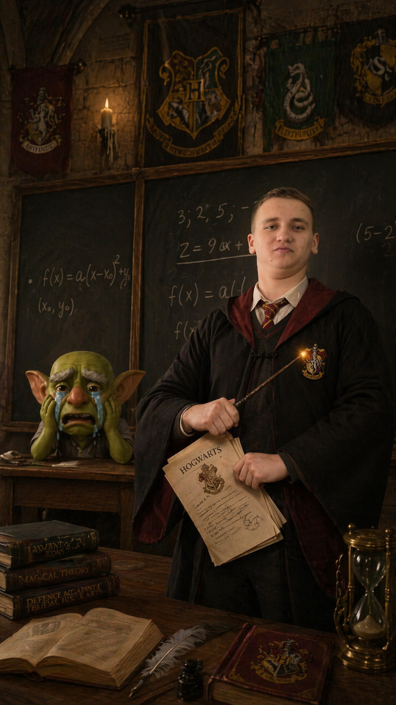
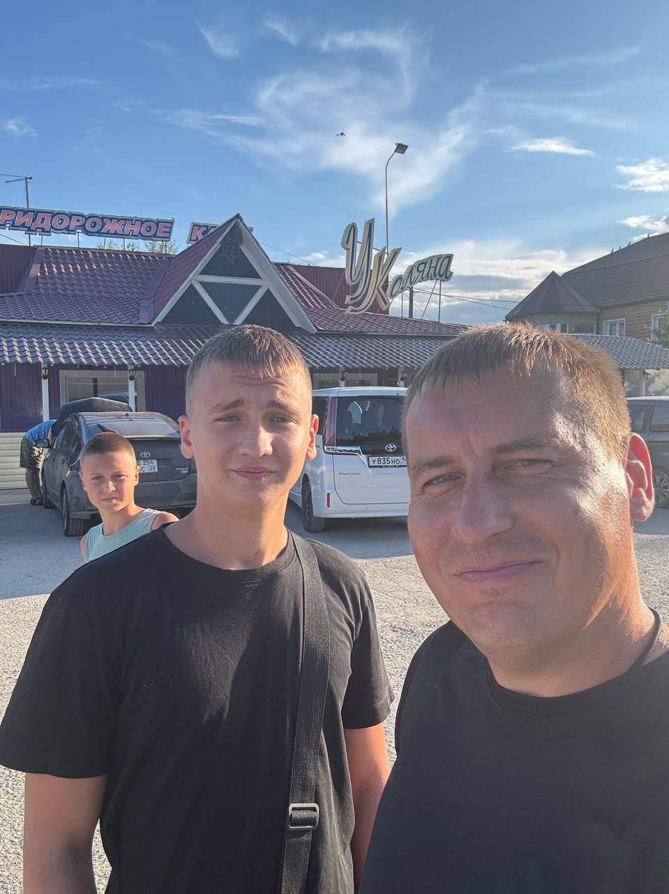
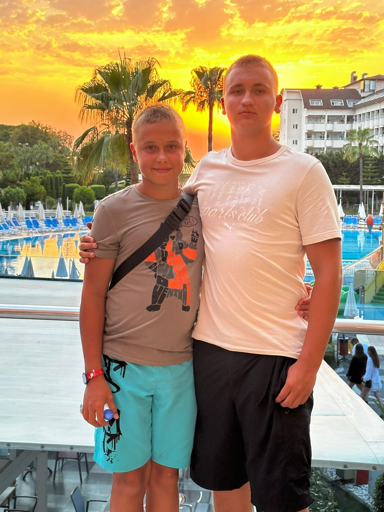
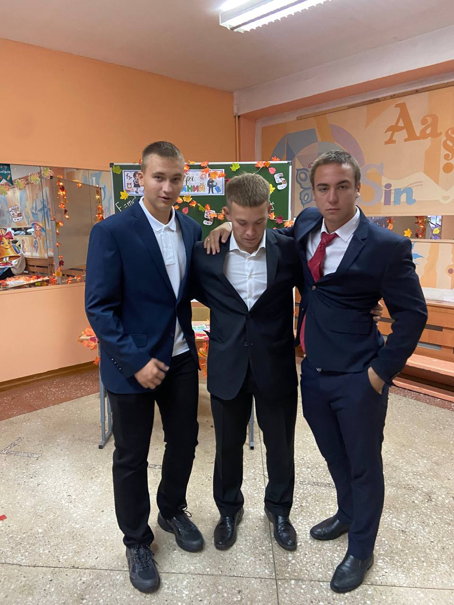
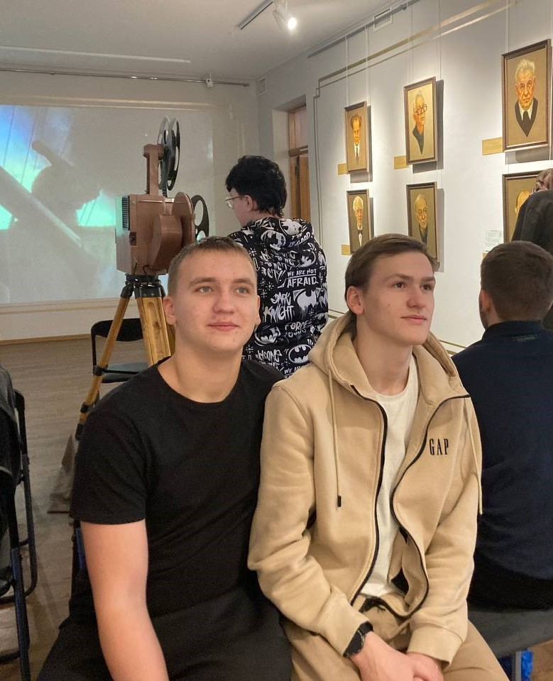
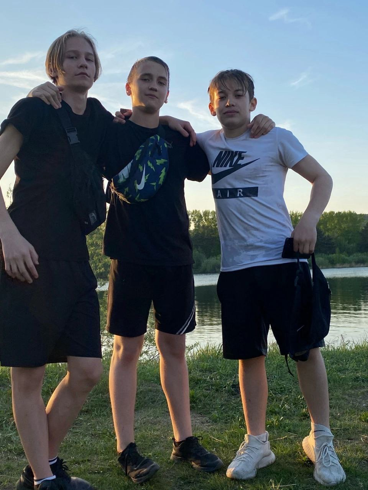
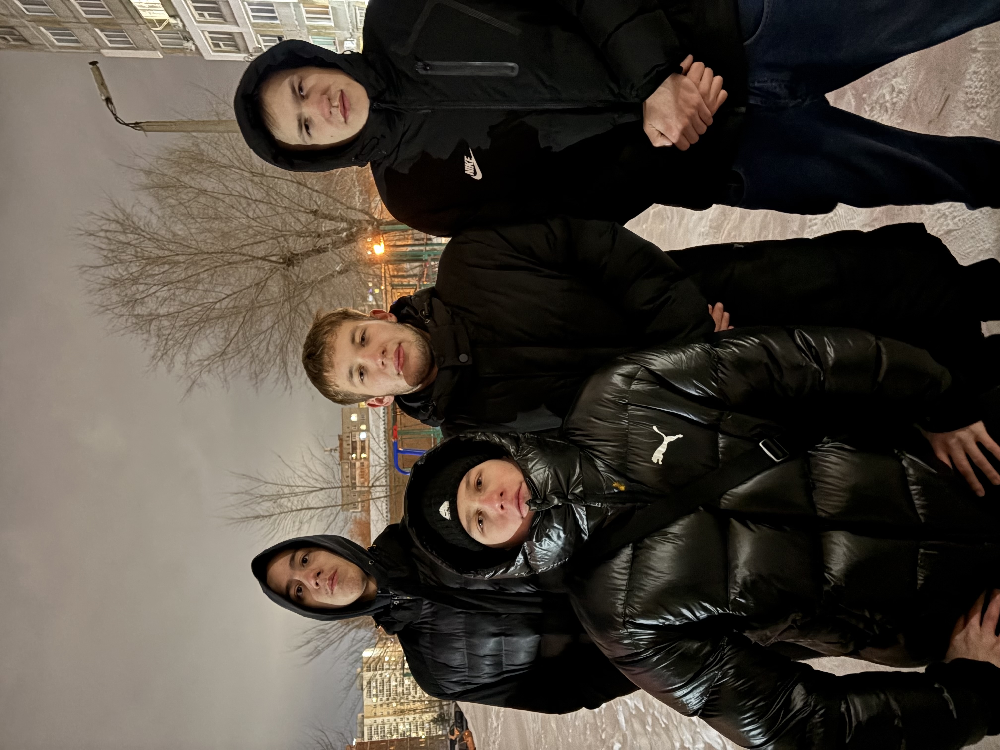

Мой сайт
Обо мне
Трифоненко Евгений Дмитриевич родился
4 декабря 2007 года. На данный момент - золотой медалист
Окончил Гарворд, Хогвартс и MIT.
Выполнил все задания на 5
с плюсом и выиграл Нарека в clash royale. Отличают
целеустремленность и желание добиваться поставленных целей.
Его энергия и находчивость настолько велики, что кажется, будто
у него в сутках не 24, а как минимум 48 часов.
ЭТО Я

Моя семья
В семье есть папа, мама и брат Никитка.
Папа у нас сильный и заботливый, он всегда помогает
и поддерживает в трудную минуту. Мама добрая и честная,
всегда задаст темп и поможет исполнить мечту!
Никита - самый веселый член семьи. постоянно удивляюсь
Его бесконечной позитивной энергии. Перенял у меня все самые
важные навыки жизни - хитрость и находчивость.
МАМА

ПАПА

НИКИТА

Друзья
Мои друзья - это очень разносторонние люди, которые со мной
на протяжении всей жизни. Они каждый раз придумывают что-то новое.
Каждые выходные проходят, как каникулы.
С ними всегда весело: мы шутим, гуляем и поддерживаем друг друга в трудную
в любых ситуауиях. Каждый из них по своему уникален, но вместе мы отличная
команда. Я ценю нашу дружбу и те моменты, которые мы проводим вмессте.




Мои увлечения
Мои увлечения меняются на протяжении всей жизни. Я увлекался
рисованием, собирал головоломки на скорость, занимался разными видами
спорта: плаванием, борьбой и др. Но основное мое увлечение-верстка сайтов.
На данный момент я увлекаюсь вресткой сайтов(frontend разработка, включающая
в себя реализацию элементов декора на странице сайта и их взаимодействие).
В процессе познания данного ремесла я изучил html и css, а также могу
обрабатывать минимальные события на языке "JavaScript".